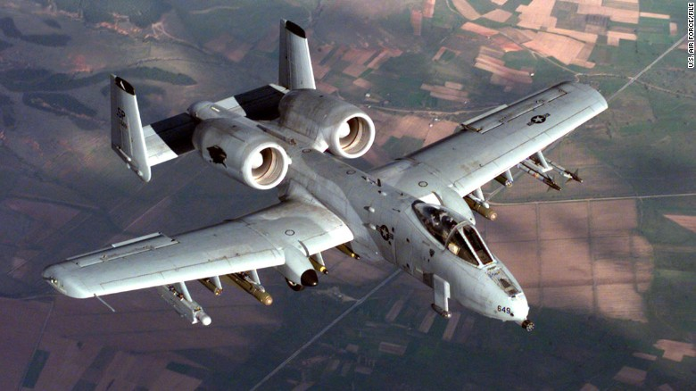

The F-35 Lightning II is Americas newest Mulitrole fighter. It is a Stealth aircraft with STOVL (Short Takeoff Vertical Landing) capabilites.

The F-22 Raptor is Americas Most advanced Multirole fighter. It has stealth and thrust vectoring capabilites though it saw limited production as there was no need for a fighter as advanced as the f-22 in the early 2000s

The F-18 is a Mulitrole carrier based fighter that has been the backbone of the US Navy for over 30 years
The F-16 Fighting Falcon is an agile jet fighter used by the US Air Force.
The F-15 is a Multirole Jet aircraft used by the USAF and is quite fierce contrary to its bulky appearance

The A-10 Thunderbolt II (aka "warthog") Is the USAF's primary close airsupport aircraft. The aircraft is heavily armored, can carry a large payload, and was built around its GAU-8/A avenger 30mm cannon.